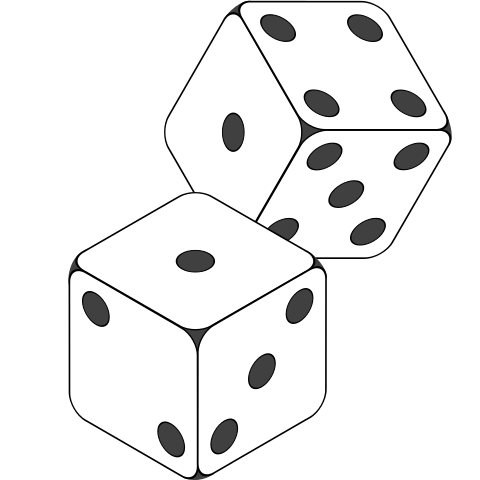

James Madison University, Spring 2018 Semester
Lab13: Processing array elements

Background
You will write today's program from scratch. Create a new Java class named ArrayPlay with a main method. For each step below, you should add code to the program without replacing prior code. When you are finished, this program will provide you with a reference for working with arrays including initializing, printing, and comparing.
Objectives
Use an array to store a sequence of values.
Display the contents of an array with a loop.
Practice manipulating various types of arrays.
Key Terms
- initializer list
- list of values used to instantiate and initialize an array in one step
- array.length
- read-only attribute of an array that stores the number of elements
- subscript
- integer value in brackets [ ] that specifies an element of an array
- ArrayIndexOutOfBoundsException
- error raised when trying to access A[i] where i < 0 or i >= A.length
Part 1: Sequentially accessing an array
Whenever you are asked to do something to your array and then print it, you should finish the update step first and then have a separate loop to do the printing.
-
In the main method, create a single array of integers that is 6 elements long.
-
Initialize each of the array elements to the value -1 using a loop of your choice.
-
In another loop, print each element of the array on a separate line as shown:
array[0] = -1 array[1] = -1 ...
-
Add code to change the value of each element of the array to its subscript. For example, array[3] should hold the value 3.
-
Print the new contents of the array. You may copy and paste the code from step 3. (Your program should now print both versions of the array.)
-
If you have not seen an ArrayIndexOutOfBoundsException, make one by causing a loop to read past the end of the array. What happens?
-
Fix the code that causes the ArrayIndexOutOfBoundsException. Then add code to re-initialize your array contents to all zeros.
Part 2: Randomly accessing an array
Download Die.class for use in Part 3. Make sure it's in the same directory as your ArrayPlay.java file.
-
Create a new Die object. (Refer to Die.html for documentation.)
-
Create a loop that will iterate at least 100 times. In the loop body:
-
Roll the die. (Don't create a new object, just roll it again.)
-
Based on the result of the roll, increment the corresponding cell of your array.
The value of each array element should be the number of times that roll is made.
-
-
After the loop finishes, print the results of the simulation. For example, if the array holds {20, 17, 19, 15, 12, 17} you would output:
1 was rolled 20 times. 2 was rolled 17 times. ...
Part 3: Working with multiple arrays
For this exercise, you will need two arrays of double values.-
Use an initializer list to assign one of the arrays to 10 double values of your choice.
-
Instantiate the other array to store 10 elements, but do not initialize the contents yet.
-
Print the contents of both arrays side by side on your screen. Label this output Before.
-
Copy the contents of the first array into the second, then print their contents again. Label this output After.
-
Finally, change the contents of one element of the first array and a different element of the second array.
-
Again, print the contents of the two arrays side by side. Label this output After Change.
-
Check that the contents of the two arrays are indeed different. If not, make the appropriate corrections.
Part 4: CodingBat Problems
For the remainder of today's lab, solve as many CodingBat problems as you can. At a minimum, you must solve three of each category. Remember to log into CodingBat first so you will receive credit.
Quickly review the Warmup-2 problems that use arrays: arrayCount9, arrayFront9, array123, array667, noTriples, has271. All of them have solutions available; try to solve them first before looking at the answer.
Solve at least three of the Array-1 problems. None of these problems require loops. Pick a variety of problems; don't just do the first three.
Solve at least three of the Array-2 problems. Each of these problems requires one loop. You may find (on CodingBat's site) the Java Arrays and Loops help document useful.
Submit your ArrayPlay.java file via Canvas by the end of the day. About half of your lab grade will be based on your CodingBat results.